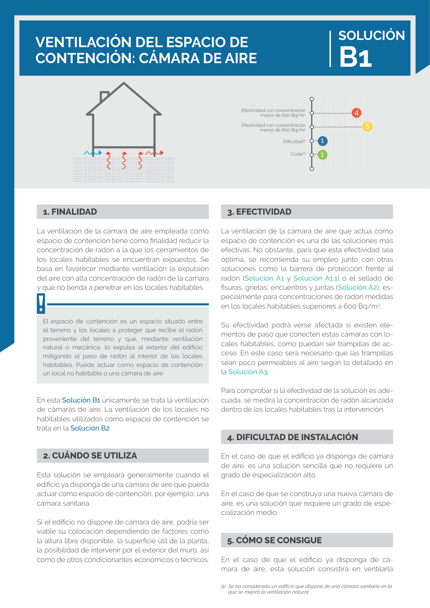

GUIA · 4. DIFICULTAD DE INSTALACIÓN · versión sin-fecha · capa guia
Formatos: JSON compacto · Markdown · PDF fuente
Ámbito del documento · texto del ámbito · documento y tablas
Tipo: tablas, figuras · nivel 1 · sección estimada: 4. DIFICULTAD DE INSTALACIÓN · padre:
4. DIFICULTAD DE INSTALACIÓN En el caso de que el edificio ya disponga de cámara de aire, es una solución sencilla que no requiere un grado de especialización alto. En el caso de que se construya una nueva cámara de aire, es una solución que requiere un grado de espe cialización medio.

PDF fuente redistribuible: copia fiel enlazada en esta página (SHA256 verificado).